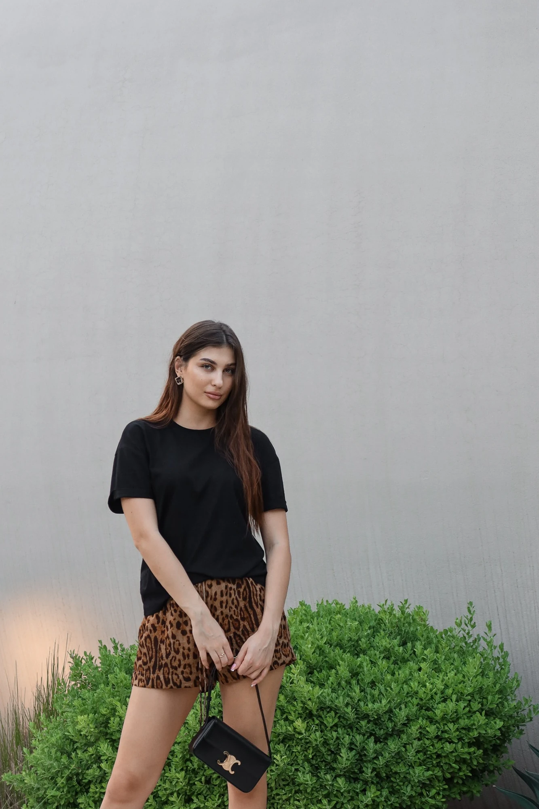
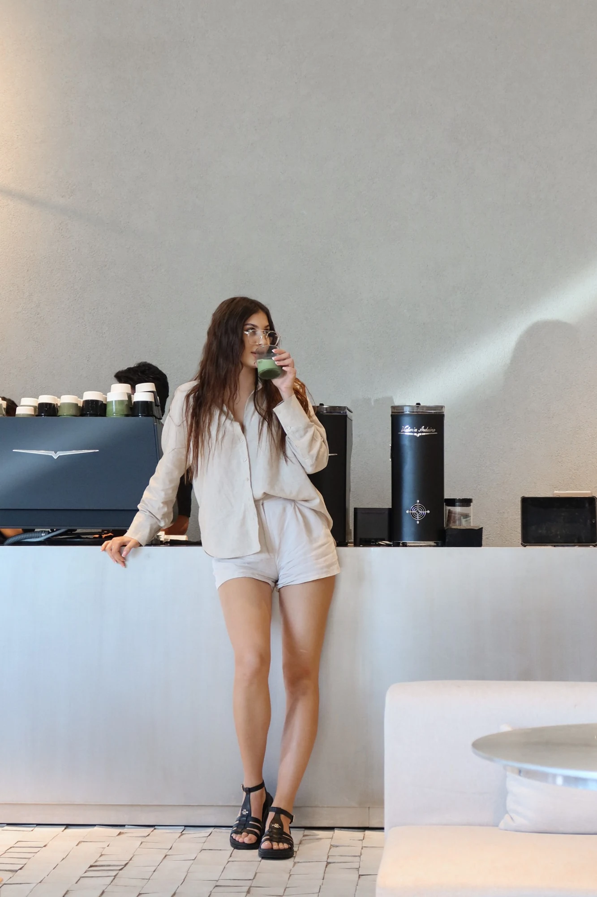
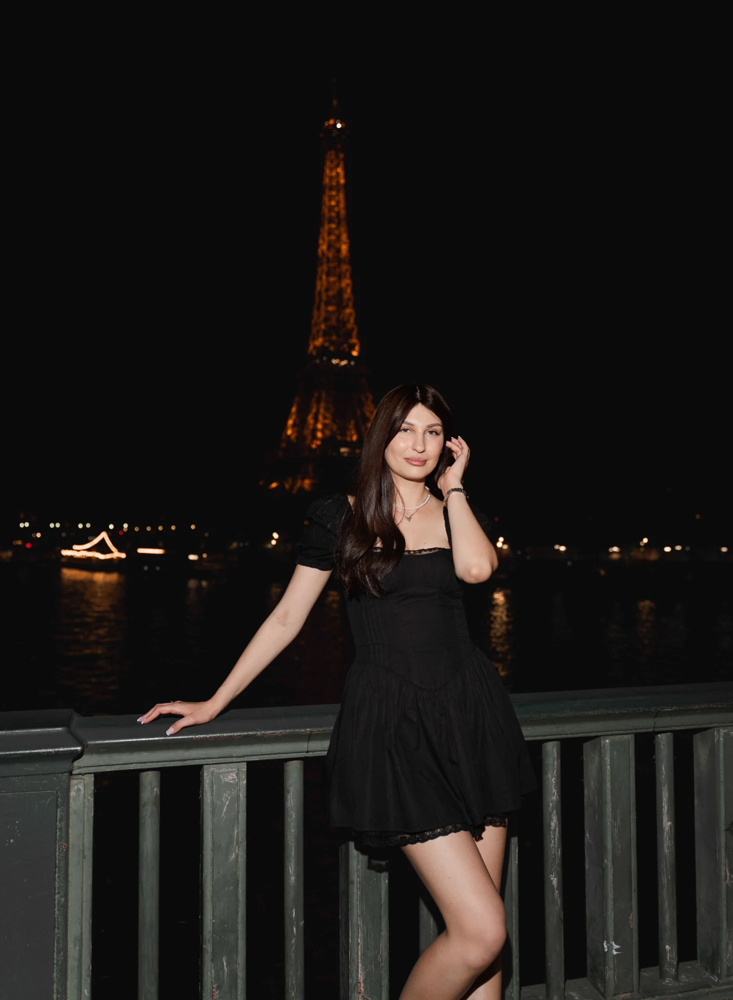

01 / expertise
Умная, но не душная
Сложные вещи объясняются через реальные ситуации и решения, а не через лекцию и профессиональный жаргон.
clear.
Не «ещё один документ про позиционирование», а рабочее пространство: кто ты, что показываешь, во что должен верить человек и куда ведёт каждый тип контента.

Перетаскивай карточки. Нажми на узел — откроется его роль в системе. В центре не услуга и не воронка: в центре ты и твой способ решать маркетинговые задачи.
Не набор качеств «умная / красивая / успешная», а контрасты, которые делают образ живым и снимают страх работать с сильным экспертом.
Сложные вещи объясняются через реальные ситуации и решения, а не через лекцию и профессиональный жаргон.
Есть позиция и уверенность, но нет образа человека, который пришёл научить собственника жить.
Современный editorial-визуал без холодной корпоративности.
Можно сказать «я бы так не делала» и тут же показать, что именно сделала бы.
Человек чувствует: ты не создашь лишний цирк, не спрячешься за терминами и объяснишь решение.
Каждая единица контента не обязана продавать всё сразу. Она должна провести человека по одному понятному маршруту — от узнавания ситуации к доверию или действию.
Конкретный момент: продажи упали, лиды стали хуже, нужен Google или нет.
узнаваниеЧто ты проверишь или что точно не станешь делать в первую очередь.
позицияКуда смотришь: кабинет, сайт, воронка, спрос, CRM, email.
компетентностьКакую связку или последовательность решений собираешь.
практикаЭкран, цифра, схема, письмо, карточка сайта, фрагмент аналитики.
trustGrowth Map, директ, консультация, сохранение или просто подписка.
CTA по смыслуНажимай на линию — справа появится её роль. Это не рубрикатор ради рубрикатора, а разные способы доказывать одну ценность.
Блог не превращается в конвейер, где каждый пост насильно ведёт в Growth Map. Маршрут зависит от темы и готовности человека.
Не «розовый girly-girl». Основа — editorial, спокойный интеллект, структура и немного digital-энергии. Женственность появляется через типографику, фото и детали, а не через тотальный розовый.
Текст здесь собран реальным HTML/CSS, поэтому он не «съезжает» и не превращается в кривой генеративный макет. Это направления подачи, а не одинаковый шаблон на всю ленту.


Отметь пункты. Если идея набирает мало — она либо слишком общая, либо пока не показывает тебя.